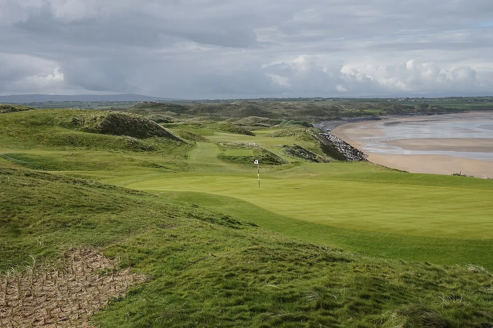
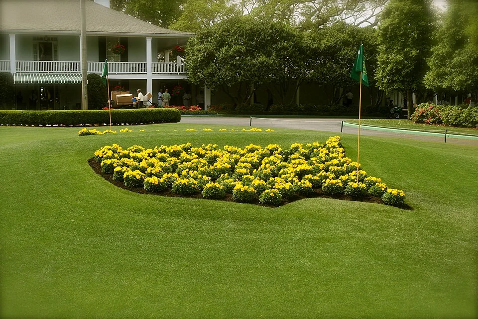
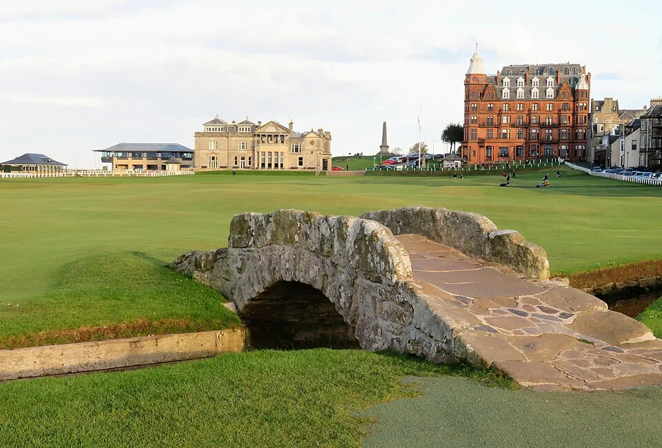
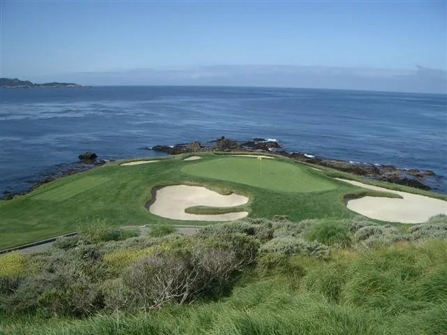
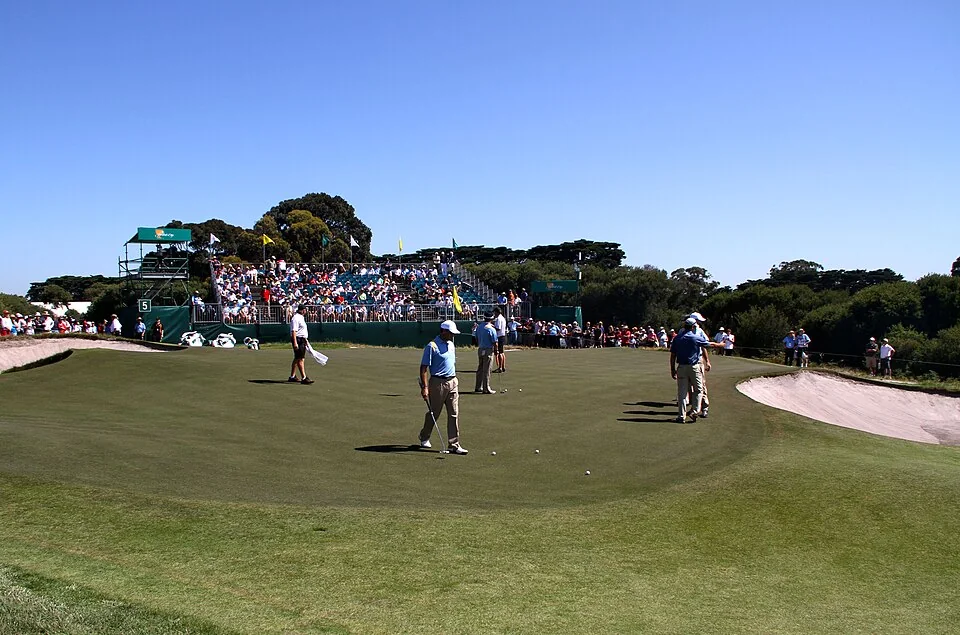
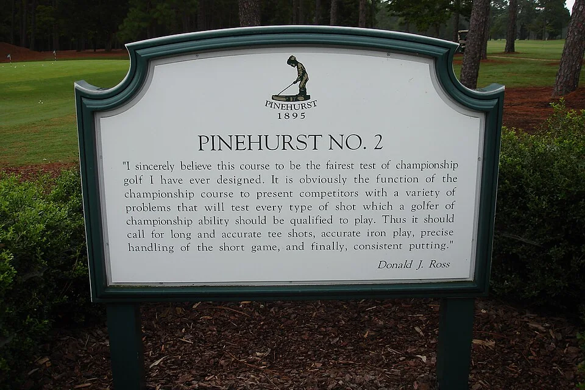
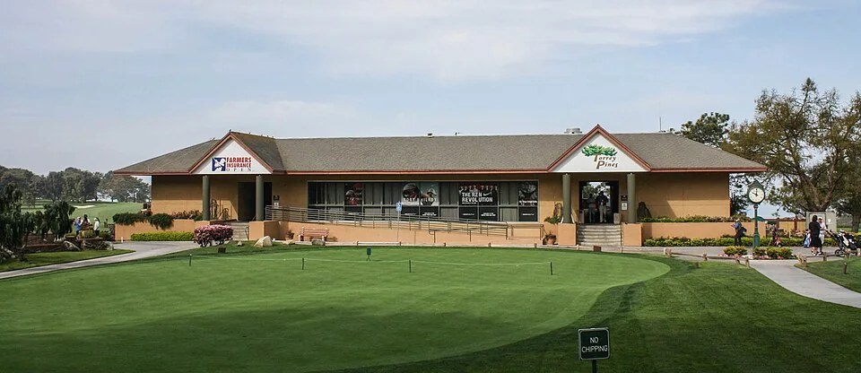
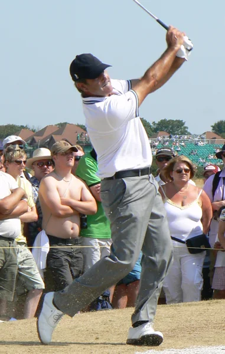
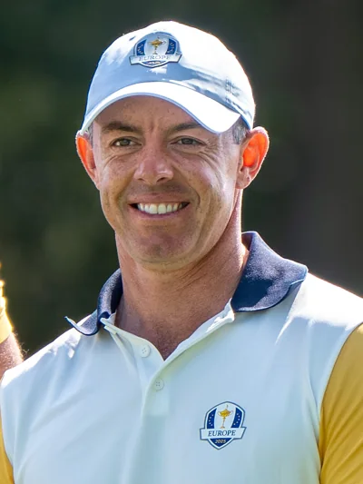
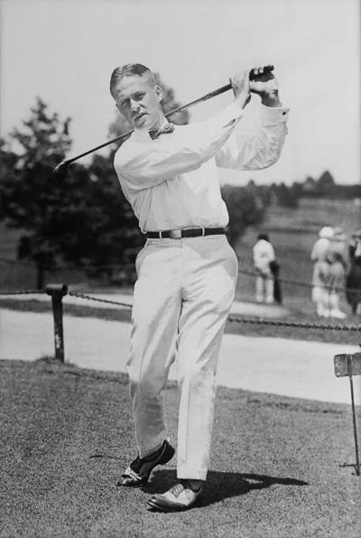

Campos y leyendas del golf
Un recorrido por seis campos y ocho figuras que marcaron la historia del golf. Conocé sus paisajes y los logros de sus protagonistas.

Campos legendarios

Augusta National
GEORGIA, EE. UU.Sede del Masters, conocido por sus calles de césped y sus pinos.

St Andrews (Old Course)
FIFE, ESCOCIALa casa histórica del golf con el icónico puente Swilcan y profundos búnkeres.

Pebble Beach
CALIFORNIA, EE. UU.Acantilados costeros impresionantes que se encuentran con las olas del Pacífico.

Royal Melbourne
VICTORIA, AUSTRALIAUn campo australiano reconocido por su suelo arenoso y sus búnkeres.

Pinehurst No. 2
CAROLINA DEL NORTE, EE. UU.Diseñado por Donald Ross, con greens elevados que exigen precisión.

Torrey Pines
CALIFORNIA, EE. UU.Dos recorridos junto a los acantilados de la costa de San Diego.
Figuras del golf
Tiger Woods
EE. UU.Jack Nicklaus
EE. UU.Arnold Palmer
EE. UU.Gary Player
Sudáfrica
Seve Ballesteros
España
Rory McIlroy
Irlanda del NorteAnnika Sörenstam
Suecia
Bobby Jones
EE. UU.Los majors son los principales campeonatos de cada circuito. En el caso de Bobby Jones, el total incluye seis títulos amateurs, considerados grandes campeonatos en su época. Datos revisados en noviembre de 2026.